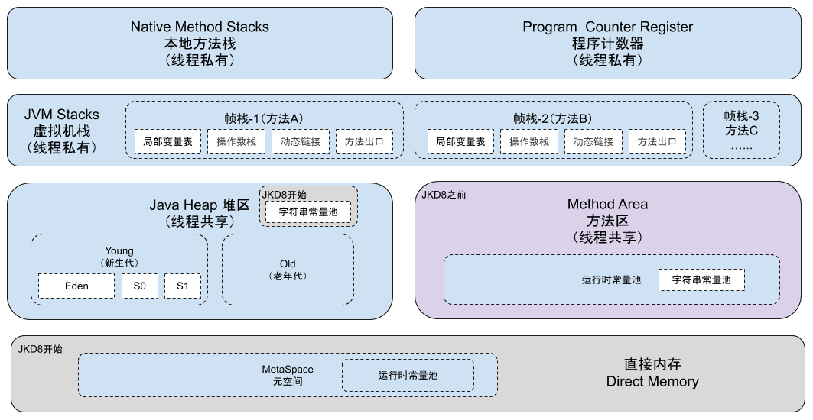

1.概述
Java虚拟机在执行Java程序的过程中会把它所管理的内存划分为若干个不同的数据区域。这些区域都有各自的用途，以及创建和销毁的时间，有的区域随着虚拟机进程的启动而存在，有些区域则依赖用户线程的启动和结束而建立和销毁。Java虚拟机所管理的内存将会包括以下几个运行时数据区域，如下图所示。

2.Java虚拟机栈（Java Virtual Stacks）
虚拟机栈描述的是Java方法执行的内存模型，是线程私有的，它的生命周期与线程相同。每个方法在执行的同时都会创建一个帧栈（Stack Frame）用于存储变量表、操作数栈、动态链接、方法出口等信息。每个方法从调用直至执行完成的过程，就对应着一个帧栈在虚拟机栈中入栈到出栈到过程。
局部变量表存放了编译器可知的各种基本数据类型（boolean、byte、char、short、int、float、long、double）、对象引用（reference类型，它不等同于对象本身，可能是一个指向对象起始地址的引用指针，也可能是指向一个代表对象的句柄或其他于此对象相关的位置）和retuenAddress类型（指向了一条字节码指令的地址），它所需的内存空间在编译期间完成分配，在方法运行期间不会改变局部变量表的大小。
在Java虚拟机规范中，对这个区域规定了两种异常状况：如果线程请求的栈深度大于虚拟机所允许的深度，抛出StackOverflowError；如果动态扩展时无法申请到足够的内存，就会抛出OutOfMemoryError异常。
3.程序计数器（Program Counter Register）
程序计数器是当前线程所执行的字节码的行号指示器，是一块较小的内存空间。在虚拟机的概念模型中，字节码解释器通过改编这个计数器的值来选取下一条需要执行的字节码指令，分支、循环、跳转、异常处理、线程恢复等基础功能都需要依赖这个计数器来完成。
Java虚拟机的多线程是通过线程轮流切换并分配处理器执行时间的方式来实现的，一个处理器（或一个内核）都只会执行一条线程中的指令。因此为了线程切换之后能恢复到正确的执行位置，每条线程都需要一个独立的程序计数器，各条线程之间计数器互不影响，我们称这类内存区域为“线程私有”的内存。
此内存区域是唯一一个在Java虚拟机规范中没有规定任何OutOfMemoryError情况的区域。
4.方法区（Method Area）
方法区是各个线程共享的内存区域，用于存储已被虚拟机加载的类信息、常量、静态变量、即时编译器编译后的代码等数据。虽然 Java 虚拟机规范把方法区描述为堆的一个逻辑部分，但是它却有一个别名叫做Non-Heap（非堆），目的应该是与 Java 堆区分开来。
HotSpot虚拟机选择把GC收集扩展至方法区，但对于其他虚拟机来说，如何实现方法区不受虚拟机规范约束。Java虚拟机规范对方法区对限制十分宽松，它不需要连续的内存和可以选择固定大小或者可扩容，甚至可以选择不实现垃圾收集。因为该区域的回收目标主要是针对常量池的回收和对类型的卸载，回收的条件相当苛刻，但是这部分的回收确实是有必要的。
根据Java虚拟机规范的规定，当方法区无法满足内存分配的需求时，将抛出OutOfMemoryError异常。
JDK8 之前，Hotspot中方法区的实现是永久代（Perm），JDK8 开始使用元空间（Metaspace），以前永久代所有内容的字符串常量移至堆内存，其他内容移至元空间，元空间直接在本地内存分配。
为什么要使用元空间取代永久代的实现？
- 字符串存在永久代中，容易出现性能问题和内存溢出。
- 类及方法的信息等比较难确定其大小，因此对于永久代的大小指定比较困难，太小容易出现永久代溢出，太大则容易导致老年代溢出。
- 永久代会为 GC 带来不必要的复杂度，并且回收效率偏低。
- 将 HotSpot 与 JRockit 合二为一。
1）运行时常量池（Runtime Constant Pool）
运行时常量池是方法区的一部分，Class文件中除了有类的版本、字段、方法、接口等描述信息外，还有一项信息是常量池（Constent Pool Table），用于存放编译期生成的各种字面量和符号引用，在类加载后进入方法区的运行时常量池中存放。
Java虚拟机规范对于运行时常量池没有做任何细节的要求，不同的提供商实现的虚拟机可以按照自己的需求来实现这个内存区域。一般来说，除了保存Class文件中描述的符号引用外，还会把翻译出来的直接引用也存储在运行时常量池中。
相对于Class文件常量池，运行时常量池具备动态性，并非预置入Class文件中常量池的内容才能进入方法区运行时常量池，运行期间也可能将新的常量放入池中。当常量池无法申请到内存时会抛出OutOfMemoryError异常。
JDK1.7 及之后版本的 JVM 已经将运行时常量池从方法区中移了出来，在 Java 堆（Heap）中开辟了一块区域存放运行时常量池。
- JDK1.7之前运行时常量池逻辑包含字符串常量池存放在方法区, 此时hotspot虚拟机对方法区的实现为永久代
- JDK1.7 字符串常量池被从方法区拿到了堆中, 这里没有提到运行时常量池,也就是说字符串常量池被单独拿到堆,运行时常量池剩下的东西还在方法区, 也就是hotspot中的永久代 。
- JDK1.8 hotspot移除了永久代用元空间(Metaspace)取而代之, 这时候字符串常量池还在堆, 运行时常量池还在方法区, 只不过方法区的实现从永久代变成了元空间(Metaspace)。
5.本地方法栈（Native Method Stack）
本地方法栈为虚拟机的Native方法服务，它会随着线程的销毁而销毁。在虚拟机规范中对本地方法栈中方法使用的语言、使用方式与数据结构并没有强制规定，因此具体的虚拟机可以自由实现它。
如果线程请求的栈深度大于虚拟机所允许的深度，抛出StackOverflowError；如果动态扩展时无法申请到足够的内存，就会抛出OutOfMemoryError异常。
6.Java堆（Java Heap）
Java堆是Java虚拟机所管理的内存中最大的一块，是被所有线程共享的一块内存区域，在虚拟机启动时创建。此内存区域的唯一目的就是存放对象实例，几乎所有的对象实例都是在这里分配内存。
Java堆也是垃圾收集器管理的主要区域，因此也被称做“GC堆”（Garbage Collected Heap）。从内存回收的角度来看，由于现在收集器基本都采用分代收集算法，所以Java堆还可以细分为：新生代和老年代；或者再细致一点有Eden空间、From Survivor空间、To Survivor空间等。从内存分配的角度来看，线程共享的Java堆可能划分出多个线程私有的分配缓冲区（Thread Local Allocation Buffer，TLAB）。目的是为了更好地回收内存，或者更快地分配内存。
根据Java虚拟机规范的规定，Java堆可以处于物理上不连续的内存空间，只要逻辑上连续即可。如果堆中没有内存完成实例分配，并且堆也无法再扩展时，会抛出OutOfMemoryError异常。